- Skepping (~4004 vC).
- bome: boom van kennis en boom van die lewe
- Sondeval. Adam en Eva eet van die boom van kennis. Sondig en bring so die sonde in die wêreld in. Dis die rede hoekom Jesus aan die kruis moes sterf.
- Kain maak vir Abel dood en vlug.
- Henog sterf nie, maar word direk hemel toe geneem (Gen 5:24)
- Metusalag is die oudste mens op aarde (969 jaar oud).
- Sondvloed (Noag en die ark) (2348 vC). Reënboog is die teken dat God nie weer so ‘n vloed sal bring nie.
- Noag se seuns: Sem, Gam en Jafet. Gam lag vir Noag wat dronk en kaal in die tent lê. Noag vervloek hom – hy sal sy broers se slaaf wees.
- Toring van Babel – mense praat in verskillende tale.
- Abraham (1996 vC tot 1821 vC)
- God se belofte met Abraham: nageslag soos die sterre in die hemel en sand in die see. Belowe ook Kanaän aan Abraham.
- Abraham sê dat Sara sy suster is (is halfsuster) en nie sy vrou (Gen 12:13).
- Sara is kinderloos. Gee haar slavin (Hagar) vir Abraham. Ismael gebore (vader van die Arabiere).
- (Dis die rede hoekom die Jode en Arabiere so veg oor Israel)
- 3 besoekers kom en sê dat Sara ‘n kind sal kry. Sara lag omdat sy al baie oud is.
- Sodom en Gomorra. Lot. Lot se vrou verander in ‘n soutpilaar.
- Abraham jok weer en sê dat Sara sy suster is (Gen 20:2)
- Isak (1896 vC tot 1716 vC)
- Abraham moet vir Isak offer in Moria (Gen 22).
- Abraham stuur sy slaaf om vir Isak ‘n vrou te kry (Rebekka)
- 2 seuns Esau & Jakob
- Isak jok net soos Abraham en sê dat Rebekka sy suster is (Gen 26).
- Jakob (1836 vC tot 1689 vC)
- Esau verkoop geboortereg aan Jakob met ‘n pot lensiesop.
- Jakob bedrieg vir Isak
- Bang vir Esau en vlug na sy oom, Laban
- Oppad na Laban droom Jakob van leer na hemel met engele. Noem die plek Bet-El (huis van God).
- Werk 7 jaar vir Ragel. Laban bedrieg hom en gee hom Lea. Kry Ragel, maar werk nog 7 jaar. Jakob is baie liewer vir Ragel.
- Trek weg van Laban. Ragel steel Laban se afgodsbeeltjies.
- God stoei met Jakob by Pniël. Slaan hom op heupbeen. Verander naam na Israel.
- 12 seuns: (1) Ruben (Lea), (2) Simeon (Lea), (3) Levi (Lea), (4), Juda (Lea), (5), Dan (Bilha, Ragel se slavin), (6) Naftali (Bilha, Ragel se slavin), (7) Gad (Silpa, Lea se slavin), (8) Aser (Silpa, Lea se slavin), (9) Issaskar (Lea), (10) Sebulon (Lea), Dina (Dogter van Lea), (11) Josef (Ragel) en (12) Benjamin (Ragel).
- Josef word verkoop en beland in Egipte
- Josef in tronk oor Potifar se vrou.
- Josef lê die skinker en die bakker se drome uit (die bakker dood).
- Josef lê die Farao se droom uit (7 vet en 7 maer koeie & 7 vet en 7 maer are).
- Josef word aangestel net onder die Farao om skure te bou en te bestuur.
- Josef se broers kom koop graan in Egipte. Herken nie vir Josef nie.
- Jakob en seuns trek van Kanaän na Egipte agv hongersnood
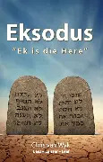
- Verdrukking van Israeliete (Josef se hele familie (die Israeliete) het hulle in Egipte kom vestig)
- Moses word groot in Farao se paleis. (Moses leef 120 jaar: 1571 vC tot 1451 vC)
- Moses slaan ‘n Egiptenaar dood en vlug.
- God praat met Moses in ‘n brandende bos.
- 10 plae: (1) Water in bloed, (2) Paddas, (3) Muskiete, (4) Steekvlieë, (5) Pes onder die vee, (6) Swere, (7) Hael, (8) Sprinkane, (9) Duisternis en (10) Dood van die eersgeborenes.
- Uittog uit Egipte en trek deur Rooisee
- Bitter water word soet by Mara (Eks. 15:22)
- Volk kla oor kos. God stuur manna en kwartels (Eks 16)
- Water uit die rots
- Moses kry die 10 gebooie op die berg Sinai (Eks 20)
-
Liefde vir God
- Jy mag geen ander god aanbid nie.
- Jy mag nie ‘n beeld of enige gelykenis maak van God nie.
- Jy mag nie die Here se naam ydellik gebruik nie.
- Jy moet die sabbatdag heilig hou.
-
Liefde vir jou medemens
- Eer jou vader en jou moeder (enigste gebod met ‘n belofte).
- Jy mag nie moordpleeg nie.
- Jy mag nie egbreuk pleeg nie.
- Jy mag nie steel nie.
- Jy mag nie vals getuig nie.
- Jy mag nie begeer nie.
- Goue kalf. Moses slaan die 2 kliptafels met die 10 gebooie stukkend.
- Tent van ontmoeting/Tabernakel
- Die Israeliete is nogsteeds in die woestyn
- Die leviete kom uit die stam Levi
- Verskillende soorte offers
- Rein en onrein
- Leefstyf vir die verbondsvolk
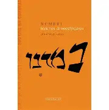
- Die Israeliete is nogsteeds in die woestyn
- Getalle mense betrokke
- Priesterlike seën: Num 6:22-27
- Volk kla dat hulle net manna het. God stuur weer kwartels (Num 11)
- Die Israeliete trek verder en kom by Kanaän aan (1 jaar na die uittog uit Egipte)
- Kanaän word verken. Volk te bang om in te val. God belowe dat geen persoon wat uit Egipte getrek het Kanaän sal binnegaan, behalwe Josua en Kaleb. Begin weer trek vir 40 jaar.
- Water uit die rots: Moses slaan rots ipv praat. Mag nie Kanaän ingaan. (Num 20)
- Koperslang (Num 21)
- Bileam se donkie praat met hom (Num 22:22)
- Josua word aangewys as Moses se opvolger

- Die Israeliete is nogsteeds in die woestyn
- Deut 1:2: afstand tussen Egipte en Kanaän is 11 dae (Israeliete het 40 jaar getrek)
- Deut 5: Die 10 gebooie
- Godsdienstige en samelewingsreëls
- Moses sterf (1451 vC)
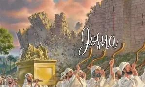
- Israeliete trek deur die Jordaan rivier
- Inname van Jerigo: Loop 7 keer om Jerigo. Mure van Jerigo stort in duie.
- Verslaan 5 Amoritiese konings – son staan stil vir byna ‘n volle dag.
- Verdeling van Kanaän onder die stamme
- Dood van Josua (leef van 1553 vC tot 1443 vC)
- Rigters was leiers wat na vore gekom het en met die krag van die Heilige Gees Israel verlos van hulle vyande.
- Die volgende was rigters: Otniël, Ehud, Samgar, Debora (vrou), Barak, Gideon, Abimelek, Tola en Jaïr, Jefta, Ibsan, Elon, Abdon, Simson
- Die belangrikste rigters was:
- Debora en Barak
- Debora was ‘n vrou
- Jael slaan tentpen deur Sisera se kop
- Gideon (regeer van 1245 vC tot 1236 vC)
- Vra teken: dou op wol en nie op grond (volgende dag anders om)
- Verslaan die Moabiete met slegs 300 man
- Simson (die sterke)
- (Latere rigters was Eli en Samuel)
- Rut was ‘n Moabitiese vrou wat vir haar skoonma, Naomi sê: “U volk is my volk, u God is my God.”
- Boas tree as losser op en trou met Rut.
- Boas was Dawid se oupagrootjie (dus is Rut in Jesus se geslagsregister).
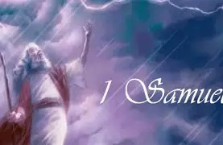
- Samuel gebore uit Hanna (wat eers nie kinders kon kry nie).
- Samuel bly saam met Eli in die heiligdom. Hy sê: “Spreek Here, want U dienskneg luister.”
- Die Filistyne voer die ark weg. Eli se seuns sterf in oorlog. Eli val agteroor en breek sy nek.
- Die volk vra vir ‘n koning.
- Samuel salf Saul as die 1ste koning van Israel.
- Saul wag nie vir Samuel nie en offer self voor die oorlog
- Saul maak nie almal van Amalek dood nie (ongehoorsaam aan God)
- Samuel salf vir Dawid as koning (Dawid leef van 1085 vC tot 1015 vC)
- Dawid en Goliat
- Saul is jaloers op Dawid en vervolg hom.
- Dawid vlug van Saul
- Samuel se dood. Samuel was die laaste rigter.
- Saul raadpleeg ‘n dodebesweerder. Roep vir Samuel op.
- Saul pleeg selfmoord tydens oorlog
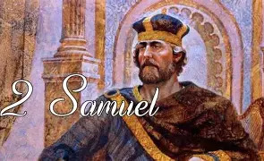
- Burgeroorlog tussen die aanhangers van Dawid en die aanhangers van Saul. 24 manskappe maak mekaar gelyk dood.
- Dawid word koning oor Israel
- Dawid se oorloë teen die Filistyne en ander nasies
- Dawid bring die ark na Jerusalem en dans voor die ark.
- Dawid wil vir die Here ‘n huis bou – dit is egter Salomo se voorreg
- Dawid pleeg owerspel met Batseba. Hulle 1ste kind sterf.
- Absalom (Dawid se seun) kom in opstand teen hom
- Absalom hang aan hare in boom en Joab maak Absalom dood
- Dawid laat die volk tel – die Here straf hom met pes onder die volk
- Dawid laat vir Salomo (Batseba se seun) tot koning salf
- Dawid sterf
- Salomo se wysheid (gee raad aan 2 prostitute)
- Salomo bou die tempel
- Die vrouens van Salomo
- Salomo raak afvallig
- Salomo sterf
- Die skeuring van die ryk:
- Rehabeam – Juda (Stamme Juda en Benjamin)
- Jerobeam – Israel (Res van die stamme)
- Abia (Juda): Nie so getrou soos Dawid nie
- Asa (Juda): Verwyder nie hoogtes nie, maar is sy hele lewe lank getrou aan God
- Agab (Israel): Goddeloos
- Elia kondig droogte aan – vlug – kraaie gee hom kos
- Bly later by weduwee. Seun sterf, maar Elia maak hom weer lewendig.
- Elia en die profete van Baäl
- Isebel (Agab se vrou) maak Nabot dood
- Agab sterf
- Ahasia (Israel): Goddeloos
- Elia kies vir Elisa om hom op te volg
- Elia word in die hemel opgeneem met ‘n vuurwa
- Die seuntjies spot vir Elisa – 2 bere maak hulle dood
- Elisa vermeerder die weduwee se olie
- Naäman word genees van melaatsheid nadat hy homself 7 maal was in die Jordaan.
- Gehasi (Elisa se slaaf) word getref met melaatsheid.
- Hongersnood in Samaria
- Gasael
- Joram (Juda): Goddeloos
- Ahasia (Juda): Goddeloos
- Jehu (Israel): Sien nie af van sondes nie. Maak Isebel dood en roei die geslag van Agab uit.
- Joas (Juda): Word koning op 7 jarige ouderdom.
- Joahas (Israel)
- Dood van Elisa
- Amasia (Juda)
- Hiskia (Juda): Gelowig. Siekte en herstel van Hiskia. Son gaan 10 minute terug. (hierdie 20 min + die son wat stilstaan in Josua is ongeveer 1 dag)
- Manasse (Juda): Goddeloos (Volgense Kronieke bekeer hy homself later)
- Amon (Juda): Goddeloos
- Josia (Juda): Gelowig
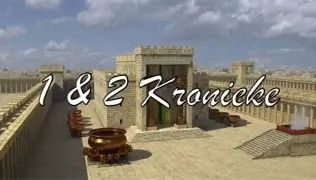
- 1 Kron 4:10: Jabes se gebed
- Geslagsregister van Dawid
- Saul
- Dawid
- Dawid bring die ark na Jerusalem. Hy dans voor die ark.
- Dawid laat die volk tel
- Salomo word tot koning verklaar
- Geskiedenis van die konings met die klem op die dinastie van Dawid
- Salomo se wysheid
- Salomo bou die tempel
- Besoek van koningin Skeba
- Dood van Salomo (leef van 1034 vC tot 975 vC)
- Skeuring van die ryk
- Jerobeam (Israel)
- Rehabeam (Juda): Regeer van 975 vC tot 958 vC
- Abia (Juda): Regeer van 958 vC tot 955 vC
- Asa (Juda): Regeer van 955 vC tot 914 vC
- Josafat (Juda): Regeer van 914 vC tot 889 vC
- Josafat veg saam met Agab
- Joram (Juda): Goddeloos. Regeer van 889 vC tot 885 vC
- Ahasia (Juda): Goddeloos: Regeer van 885 vC tot 878 vC
- Joas (Juda): Gehoorsaam: Regeer van 878 vC tot 825 vC
- Amasia (Juda): Regeer van 825 vC tot 810 vC
- Ussia (Juda):
- Jotam (Juda)
- Agas (Juda): Regeer van 742 vC tot 726 vC
- Hiskia (Juda): Gehoorsaam. Regeer van 726 vC tot 698 vC
- Manasse (Juda): Goddeloos, maar later gehoorsaam. Regeer van 698 vC tot 643 vC
- Amon (Juda): Regeer van 643 vC tot 641 vC
- Josia (Juda): Regeer van 641 vC tot 610 vC
- Joahas (Juda): Regeer van 610 vC tot 610 vC (minder as ‘n jaar)
- Jojakim (Juda): Regeer van 610 vC tot 599 vC. Nebukadnesser het vir Jojakim na Babel gevat.
- Jojagin (Juda): Regeer van 599 vC tot 599 vC (minder as ‘n jaar)
- Sedekia (Juda): Regeer van 599 vC tot 588 vC
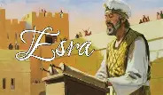
- Help om die tempel te herbou saam met die ballinge wat saam met Serubbabel teruggekom het. Ballingskap het 70 jaar geduur van 607 vC tot 537 vC.
- Lys van mense wat saam met Serubbabel teruggekom het
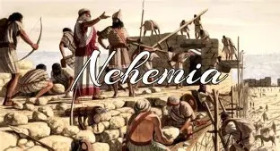
- Help met die bou van die muur rondom Jerusalem na die balingskap (537 vC).
- Lys van mense wat saam met Serubbabel teruggekom het (dieselfde lys as in Esra)
- Bid skietgebed toe hy vir die koning toestemming vra om te gaan help om die muur te bou.
- Bid nog ‘n skietgebed in 6:9
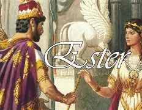
- Ester is ‘n Joodse meisie wat koningin word van koning Ahasveros
- Mordegai (Ester se pa was sy oom) het Ester aangeneem as sy eie dogter
- Mordegai red Ahasveros se lewe
- Haman wil al die Jode doodmaak
- Haman word om die lewe gebring
- Die Jode kry die reg om hulself te verdedig
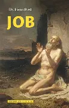
- Geskiedenis van Job se beproewing (waarskynlik uit die tyd van Abraham):
- Satan sê dat Job net getrou is aan God omdat dit so goed gaan
- God laat toe dat Satan Job tref met rampe: Al sy kinders en diere is dood en hy het uitgeslaan met swere
- Sy vriende sê hy boet vir sy sondes, terwyl hy niks verkeerds gedoen het nie
- Job verwens sy geboorte
- God antwoord Job
- Job word gesond en God gee Job twee keer soveel as wat hy gehad het
- Job leef nog 140 jaar na hierdie gebeure. Dus het hy waarskynlik net na die sondvloed (2348 vC) geleef
- Versameling liedere van hoofsaaklik Dawid (ander digters is Asaf en Moses)
- Bekendstes: 23, 100, 119 (langste Psalm)
- Spreuke van hoofsaaklik Salomo (ander spreuke van Agur en Lemuel)
- Spr 9:10: “Wysheid begin met die dien van die Here.”
- Spr 22:1: “'n Goeie naam is meer werd as groot rykdom, die goeie gesindheid van ander meer as silwer en goud.”
- Ook baie wyshede soos in Spreuke
- Tema: “Alles kom tot niks” (Dit wat op aarde gebeur maak nie saak nie)
- Pred 3: Elke ding het sy vaste tyd.
- Pred 11:1: Werp jou brood op die water.
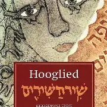
- Versameling liefdesliedere waarin die man en vrou hulle liefde vir mekaar besing.
- Les: Daar is in die egte liefdesverhouding nie net vreugde nie maar ook misverstand en hartseer, maar die liefde is onuitblusbaar.
- Jesaja waarsku die volk om aan God gehoorsaam te wees en om nie ander volke se hulp te vra nie.
- Indien die volk nie sou luister nie, sou hulle deur die Assiriërs (Nebukadneser) in ballingskap weggevoer word. (Ballingskap het 70 jaar geduur van 607 vC tot 537 vC.)
- Jesaja verkondig ook hoop omdat God altyd lief sal wees vir hulle.
- Jes 40: Bekendste hoofstuk
- Jes 53: Verwys na Jesus se kruisiging.
- Daar is 66 boeke in die Bybel en Jesaja het 66 hoofstukke.
- Waarsku die volk ook teen ballingskap.
- Israel word in sy tyd weggevoer na ballingskap wat 70 jaar duur (607 vC tot 537 vC).
- Jer 18: Pottebakker en die klei.
- Handel oor die verskriklike dinge wat die volk deurgemaak het toe hulle weggevoer is in ballingskap.
- Die Here het dit gedoen as straf vir die volk se sonde.
- Roep die volk op om hulle te bekeer.
- Lê 390 dae op linker sy (390 jaar wat Israel sondig)
- Lê dan 40 dae op regter sy (40 jaar wat Juda sondig)
- Moet sy kos op beesuitwerpsel gaarmaak.
- Daniël (Beltsasar) en sy 3 vriende, Sadrag, Mesag en Abednego: eet gesonder as ander en is gesonder.
- Daniël lê Nebukadneser se droom van die beeld uit sonder dat hy droom vertel word.
- Sadrag, Mesag en Abednego gered uit brandende oond nadat hulle nie voor Nebukadneser se beeld wou buig nie.
- Nebukadneser leef soos ‘n dier.
- Die skrif teen die muur by die ete van koning Belsasar.
- Daniël in die leeukuil (Darius is koning).
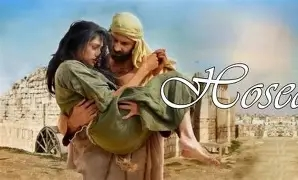
- Hosea trou met prostituut (Hosea se gebroke huwelik beeld die gebroke verhouding tussen God se sy volk uit).

- Verwys na sprinkaanplae en droogtes.
- Natuurrampe is ‘n teken dat God dié sal oordeel wat in opstand is teen Hom.
- Skaapboer
- Sien gesig van ‘n skietlood: God se volk is soos ‘n muur wat skeef gebou is en wat afgebreek moet word.
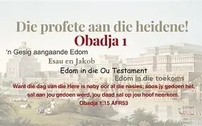
- Kondig straf aan oor Edom, Juda se vyand, omdat hy hom verlekker het in Juda se teëspoed.
- God stuur Jona om Nineve te waarsku om hulle te bekeer.
- Jona klim op ‘n ander skip. ‘n Vis sluk Jona in, maar word weer later uitgespoeg.
- Nineve luister vir Jona, maar Jona is bedruk daaroor.
- Tydgenoot van Jesaja.
- Verkondig dat God sal oordeel en red.
- Verkondig die ondergang van die Assiriese ryk (Nebukadneser) en oordeel oor Nineve en die bevryding van die volk van God.
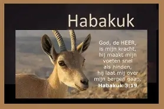
- Habakuk kla oor die onreg wat plaasvind en omdat God niks doen aan die optrede van die vyand nie.
- Habakuk 3:17: “Al sou die vyeboom nie bot nie en daar geen druiwe aan die wingerde wees nie...”
- Jerusalem sal ondergaan, maar sal weer gered word.
- Haggai spoor die volk aan om die tempel weer te herbou.
- Leef saam met Esra (520 vC tot ~515 vC) wat help om die tempel te herbou.
- Voorspel Messiaanse tydperk (Jesus op aarde).
- Sag 9:9: “...hy is nederig en ry op ‘n donkie...”
- Nadat die tempel reeds herbou is.
- Bestraf die volk weereens vir sondes.
- Mal 3:8: Bring die volle tiende.